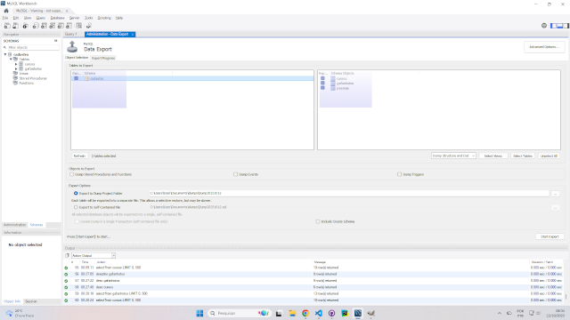
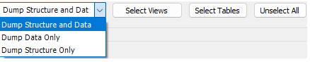
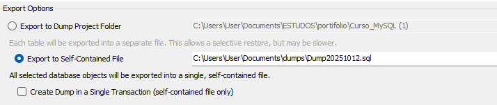
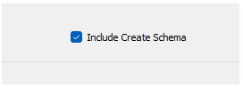
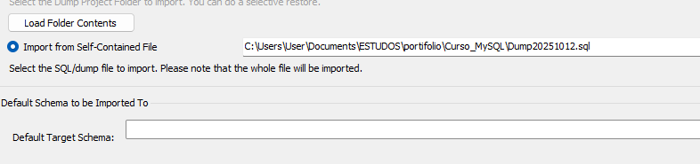

Gerenciando cópias de segurança no Workbench
Backup é o seu “botão de voltar no tempo” 🕒 Se algo der errado, você restaura tudo com poucos cliques.
1º Passo: Preparando o banco
Abra o banco cadastro e verifique as tabelas e registros.
use cadastro;
select * from cursos;
select * from gafanhotos;
describe gafanhotos;
desc cursos;
Dica: DESC e DESCRIBE fazem a mesma coisa ✅
2º Passo: Exportando o backup
Agora vamos criar o arquivo de backup usando o menu do Workbench.
- Clique em Server
- Selecione Data Export
- Selecione o schema cadastro
- Marque tudo que deseja salvar em Schema Objects

Escolha recomendada: marque Dump Structure and Data ✅

Escolha um local para salvar o arquivo e pressione Start Export.

Não esqueça: marque Export to Self-Contained File para salvar tudo em um único arquivo.

3º Passo: Testando se o backup funciona
Agora vamos apagar o banco (somente para teste) e depois importar novamente.
drop database cadastro;
Cuidado: esse comando apaga tudo. Use apenas se estiver seguindo o teste mesmo ✅
4º Passo: Importando o backup (restaurar)
Agora é o caminho reverso: você escolhe o arquivo exportado e importa para restaurar o banco.
- Vá em Server → Data Import
- Selecione o arquivo do backup
- Clique em Start Import

Sucesso: se tudo der certo, seu schema e suas tabelas voltam como estavam ✅